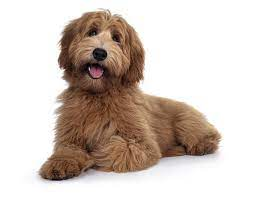
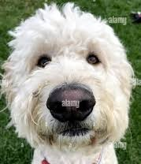
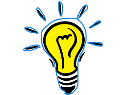

O nama
Dobrodošli na našu stranicu! Ja sam Milica, strastvena studentica koja živi za trenutke provedene s četveronožnim prijateljima. Moja ljubav prema životinjama nije samo hobi, već način života. Provela sam mnogo sati učenja i rada kako bih razumjela njihovo ponašanje, a kruna toga bio je moj uspješno završen tečaj za trenera pasa.
Moje iskustvo u radu s psima proširilo se izvan klasičnog treniranja, obuhvaćajući sve aspekte njihovog života. Volim provoditi vrijeme s njima, promatrajući kako se razvijaju i uče, gradeći jedinstvene veze koje samo ljubitelji životinja mogu razumjeti.
Ova stranica je posvećena dijeljenju iskustava, savjeta i pustolovina koje dijelim s mojim vjernim pratiteljima. Bilo da razgovaramo o vještinama treniranja, dijelimo priče o avanturama ili jednostavno uživamo u ljepoti životinja, ovdje smo zajedno kako bismo slavili tu posebnu vezu koju dijelimo s našim krznenim prijateljima.
Hvala vam što ste posjetili stranicu, nadam se da ćete uživati u putovanju kroz svijet ljubavi prema životinjama zajedno sa mnom!

Zavirite u moj svijet na društvenim mrežama! Tu ćete pronaći dozu radosti, avanture i ljubavi prema životinjama. Slijedite me na [navesti vaše društvene mreže] i budite dio priče gdje se sreću ljubitelji životinja, dijelimo iskustva i razmjenjujemo savjete. Radujem se povezivanju s vama online!
Ideje
Uvijek se trudimo biti vaša podrška kada niste u mogućnosti povesti svoje pse sa sobom. Trenutno, s ponosom možemo pružiti dom do dva psa istovremeno, pridajući posebnu pažnju svakom četveronožnom gostu.
Naša vizija ide dalje od toga - radimo na stvaranju udobnog i sigurnog hotela za pse, gdje će vaši ljubimci imati priliku uživati u posebnoj pažnji i brizi dok ste vi odsutni. Ovaj hotel neće samo biti smještaj, već pravo malo ljubimčev raj, s posebnim prostorima za igru, učenje i odmor.
Naša prednost leži u tome da ograničavamo broj pasa kako bismo svakom gostu pružili individualnu pažnju koja im je potrebna. Nastojimo stvoriti okruženje gdje će se svaki pas osjećati kao kod kuće, uz pažljivu njegu i ljubazno osoblje koje ih voli kao vlastite.
Zahvaljujemo vam na povjerenju i radujemo se pružanju izuzetne brige vašim ljubimcima dok vi uživate u trenucima bezbrižnosti.